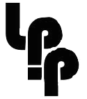

Sig:
Parse::Yapp: Ejemplo de Uso
Sup:
PRIMERA PARTE: APUNTES DE
Ant:
Consejos a seguir al
Con:
Ind:
Análisis Sintáctico Ascendente en Perl
Subsecciones
Parse::Yapp
: Ejemplo de Uso
Conceptos Básicos
Construcción de las Tablas para el Análisis SLR
Los conjuntos de Primeros y Siguientes
Construcción de las Tablas
El módulo Generado por
yapp
Algoritmo de Análisis LR
Depuración en
yapp
Precedencia y Asociatividad
Generación interactiva de analizadores
Yapp
Construcción del Árbol Sintáctico
Acciones en Medio de una Regla
Esquemas de Traducción
Definición Dirigida por la Sintáxis
Manejo en
yapp
de Atributos Heredados
Acciones en Medio de una Regla y Atributos Heredados
Recuperación de Errores
Recuperación de Errores en Listas
Consejos a seguir al escribir un programa
yapp
Práctica: Un C simplificado
La Gramática de
yapp
/
yacc
La Cabecera
La Cabecera: Diferencias entre
yacc
y
yapp
El Cuerpo
La Cola: Diferencias entre
yacc
y
yapp
El Análisis Léxico en
yacc
:
flex
Práctica: Uso de
Yacc
y
Lex
El Analizador Ascendente
Parse::Yapp
La Estructura de Datos Generada por
YappParse.yp
Práctica: El Análisis de las Acciones
Práctica: Autoacciones
Práctica: Nuevos Métodos
Práctica: Generación Automática de Árboles
Recuperacion de Errores: Visión Detallada
Descripción Eyapp del Lenguaje SimpleC
Diseño de Analizadores con
Parse::Eyapp
Práctica: Construcción del AST para el Lenguaje Simple C
Analizador Léxico
El Generador de Analizadores
byacc
Sig:
Parse::Yapp: Ejemplo de Uso
Sup:
PRIMERA PARTE: APUNTES DE
Ant:
Consejos a seguir al
Casiano Rodríguez León
2013-11-10